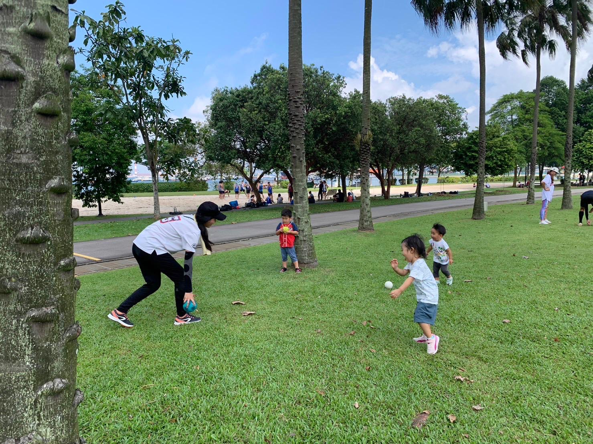
01
自然の中で、五感を育てる
裸足で土を踏み、葉を集め、虫の声に耳をすます。四季のうつろいを、まるごと感じる毎日を。
合言葉を入れてください
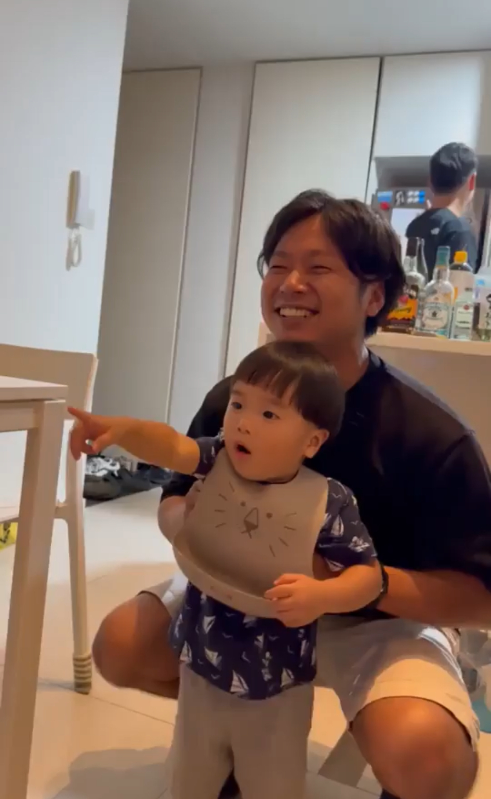
Nisshi & Kahho Kindergarten
2027年4月 開園予定 ／ 千葉県 流山市
From a friend ✦
いつも遊んでくれてありがとう。
２人の雰囲気を意識しながら、
勝手にHPを作ってみました。
２人が作る園を、楽しみにしています。
だんくん・ようくんの
第２のちちまま として、
これからもよろしくお願いします。
── いのっち家より
CONCEPT
「ちゃんと教えなきゃ」でもなく、
「ただ預かるだけ」でもなく。
子どもが、自分のペースで、
自分の「好き」を見つけていく。
そのすぐ隣に、大人が静かに座っている。
にっしー＆かっほー幼児園は、
そんな「あいだ」の場所を目指します。
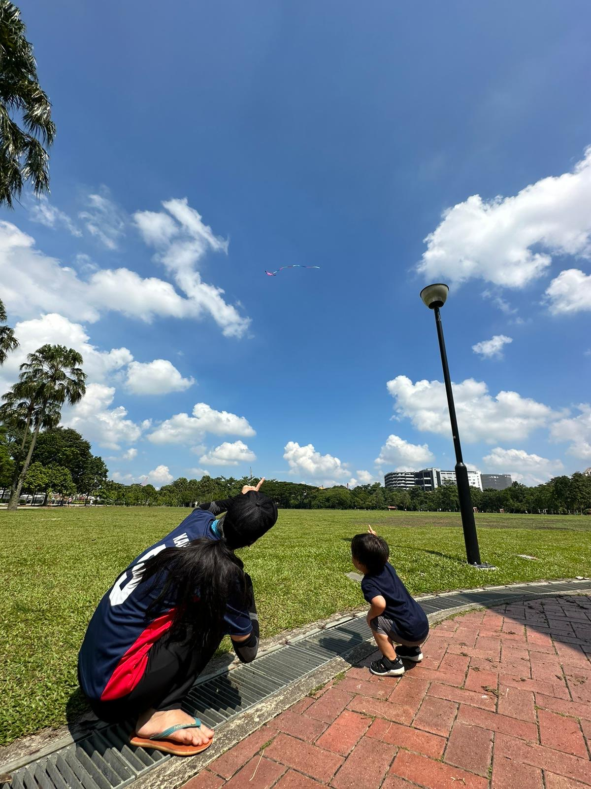
FOR THE TEACHERS
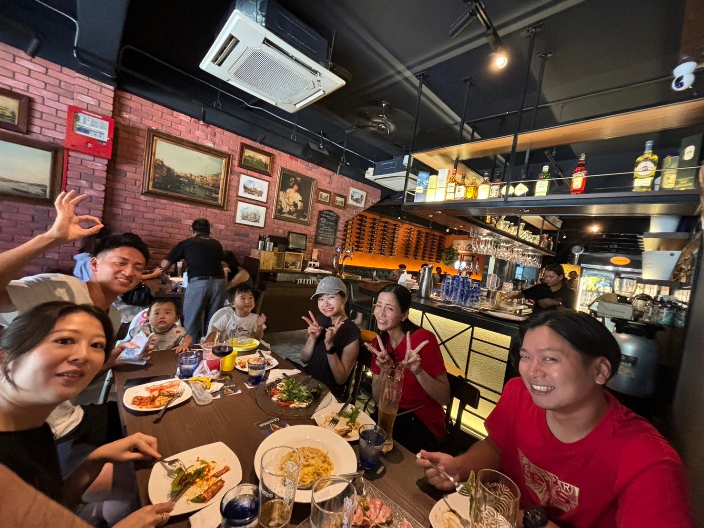
「先生に余裕があることが、すべて。」 ── 理事 西田光希
仕組みや環境を整えて、
常に先生に余裕がある状態を作り出すこと。
それが、わたしの使命です。
先生に余裕があると、
子どもたちへの接し方が変わる。
子どもたちへの接し方が変われば、
それは子どもたちの安全と、
よりよい成長につながっていく。
シンプルだけれど、
ここがすべての原点です。
FEATURES

01
裸足で土を踏み、葉を集め、虫の声に耳をすます。四季のうつろいを、まるごと感じる毎日を。
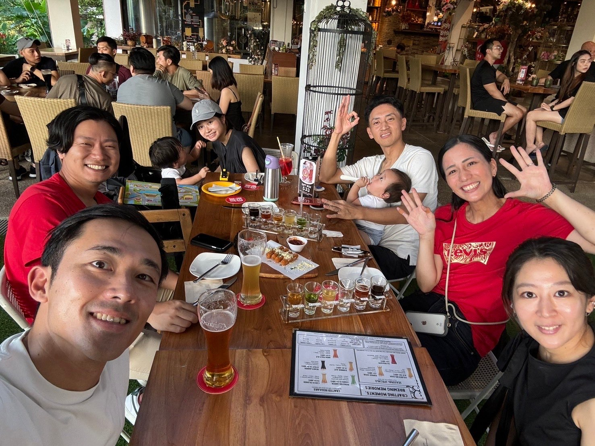
02
「正解」を急がず、「やってみたい」を待つ。子どもの「なぜ？」が、明日の力になる。
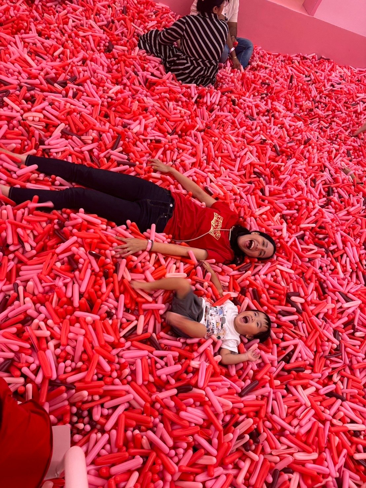
03
ひとりひとりの顔と名前と、心の動きが見える。小さな園だから、できることがある。
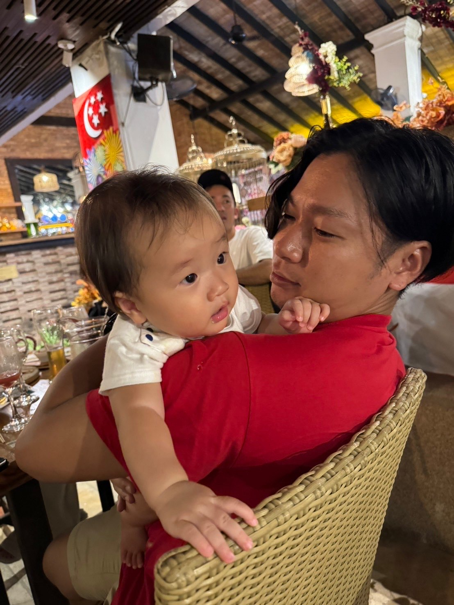
04
送り迎えのほんの数分も、行事の一日も。家族の物語のひとコマになる場所であること。
05
育てて、収穫して、料理して、食べる。「いただきます」が、いちばん深くなる時間を。
06
流山のおじいちゃん、おばあちゃん、お店、畑。まちぜんぶが、子どもの先生になる。
KIDS' VOICE
１人目／Dくん（生まれた時から、にっしーかっほーと一緒）
えっとね、ぼく、生まれてからずっと
にっしーとかっほーと遊んでるの。にっしーはね、ぼくがどんなに無茶ぶりしても、
最後まで真顔で付き合ってくれる。
ふつうの大人、途中で「もう無理」って言うのに。かっほーはね、ぼくの「あのね、あのね」っていう
つまんない話を、ぜんぶ「うんうん、それで？」って
本気で聞いてくれるの。
ふつうの大人、たぶん3秒で目が泳ぐよ。だからさ、
この２人がやる園、通うしかないでしょ。
２人目／Yくん（兄ちゃんの後ろをついて回る、見習い中）
あ、ぼく、Yです。よろしくお願いしますっ。
にっしーは、ぼくがちょっと泣きそうになってると、
「えっ、なんで！？」って大げさに驚いてくれる人。
その瞬間、なんか泣くタイミング逃すんだよね。
……たぶん、わざとやってる。かっほーはね、ぼくが何にも言わなくても、
ぼくの欲しいやつ、すーっと出してくれるの。
エスパーかな？ ちがうな。たぶん、見てくれてるんだ。にいちゃんも言ってたけど、
うん、この園、間違いないっす。
OUR STORY

みつきと香穂が出会ったのは、
シンガポールのソフトボールチーム
「Towers（タワーズ）」のグラウンドでした。
白球を追いかけながら、
たくさんの家族と、たくさんの子どもたちと出会いました。
国も、文化も、子育ての形も違うのに、
子どもたちはみんな、ただただ毎日を楽しそうに生きている。
「子どもって、こんなに自由でいいんだ」
「先生が楽しそうにしてる場所って、子どもも楽しそう」
そんな小さな気づきが積み重なって、
わたしたちは決めました。
──いつか、自分たちの園をつくろう、と。
その「いつか」が、いま、
2027年4月、流山で動き出します。
理事 ／ 西田 光希（にっしー）
スーパー幼稚園先生 ／ 西田 香穂（かっほー）
STAFF
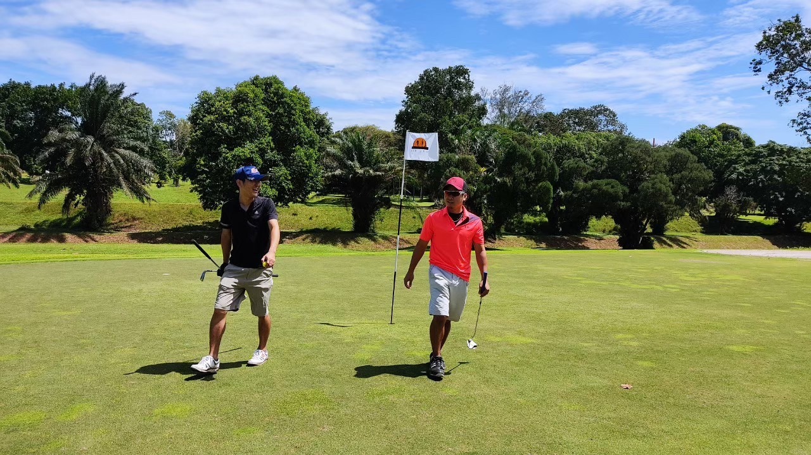
理事
"にっしー"
酒とツッコミとマヨネーズを
こよなく愛する男。
「カロリーハーフ？それはマヨじゃねぇ」が口グセ。
Towersでは長らくキャプテン兼外野手。
幼児をつまみに酒を飲むのが、日課。
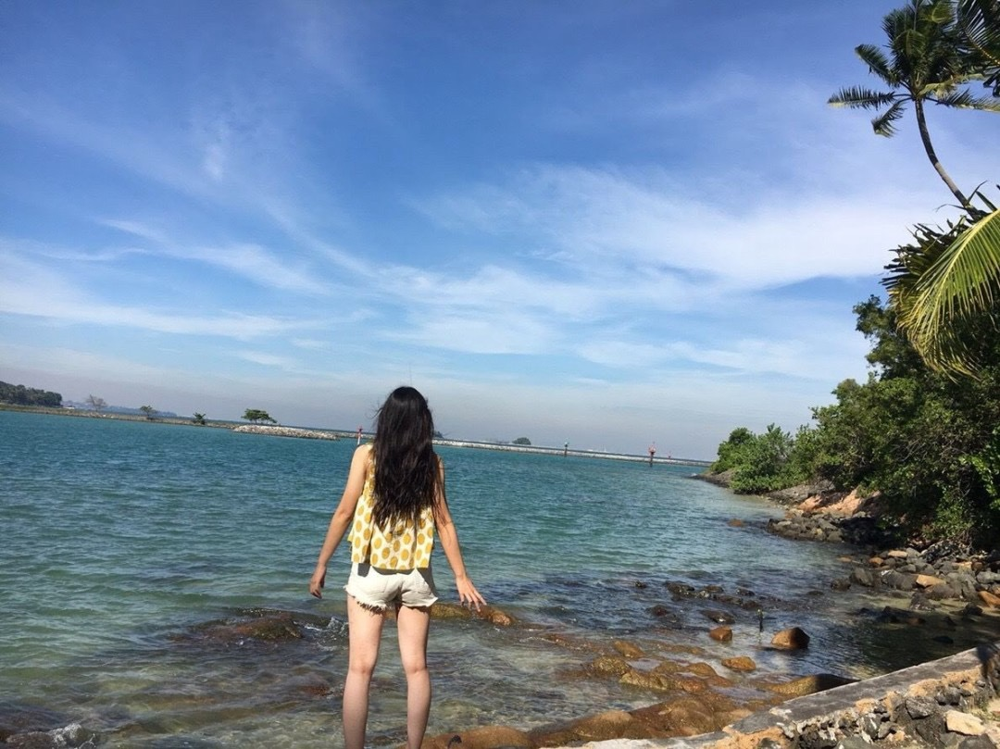
スーパー幼稚園先生
"かっほー"
嵐とにっしーを、
こよなく愛する女。
GALLERY
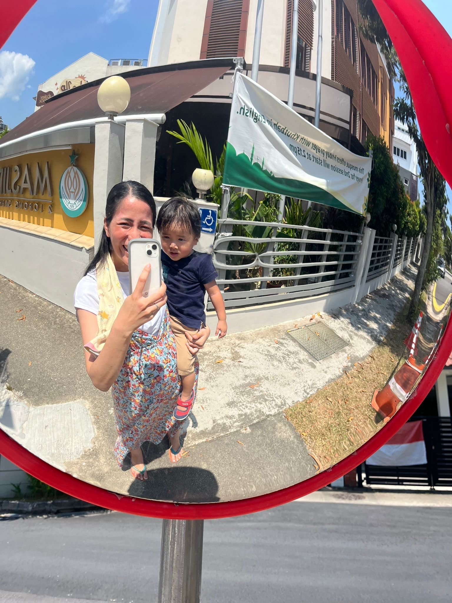
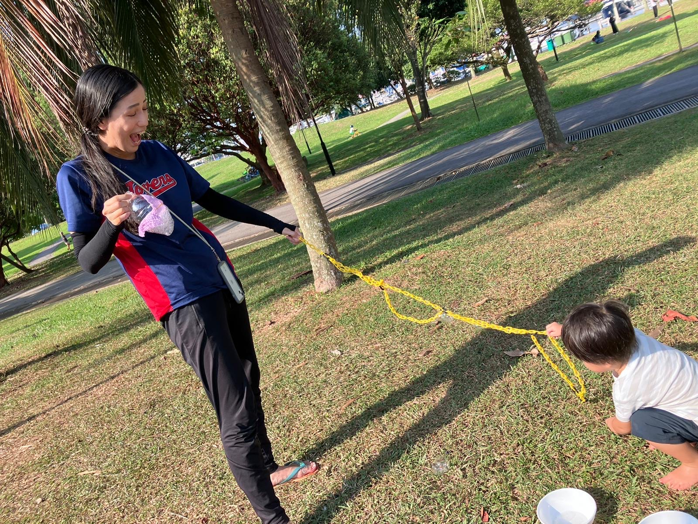
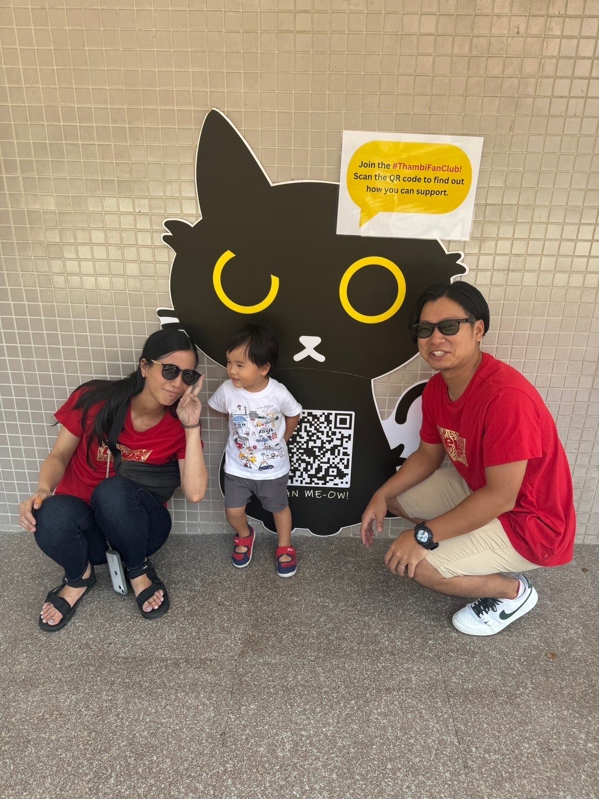
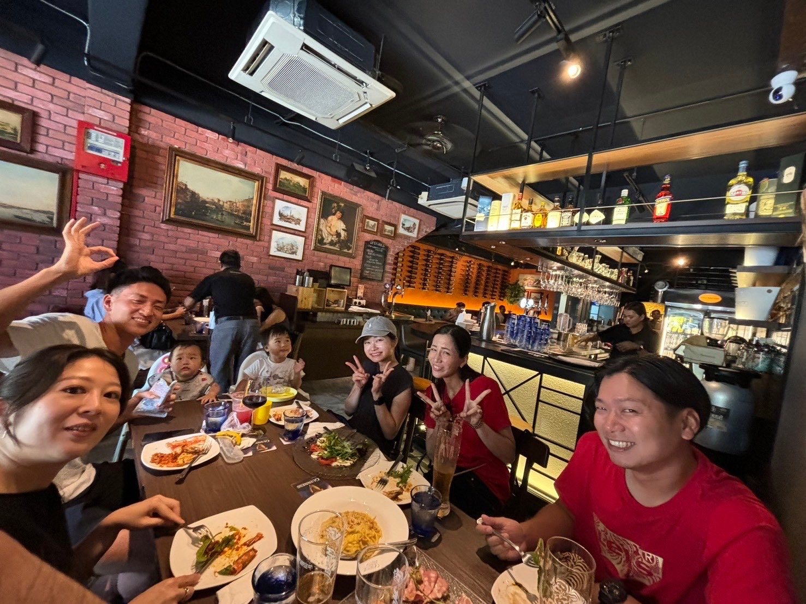
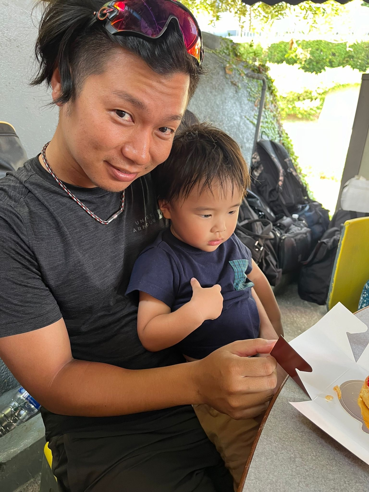
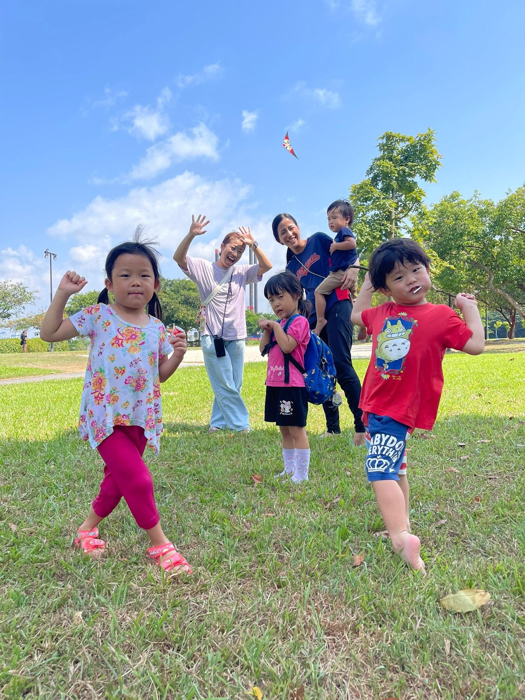
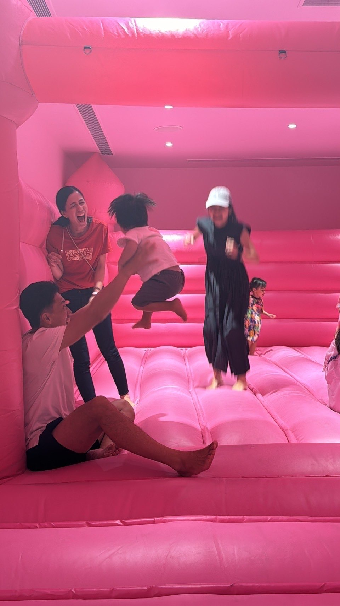
🎂 Special Letter
かほちゃん、お誕生日おめでとう。
シンガポール、日本でも会えて
嬉しい限りです！
みつきさんと一緒に作る園、
絶対にいい園になると、勝手に確信してます。
31歳 楽しんでね〜！
── いのっち家より


INFORMATION
現在、2027年4月の開園に向けて準備を進めています。
入園説明会・見学会の情報は、こちらのページとSNSでお知らせします。